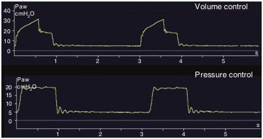

معادله حرکت ریه در واقع بالانس بین نیروهای وارد به ریه را نشان میدهد. در هر لحظه در طول دم فشار راه هوائی برابر با مجموع فشارهای زیر است:
- فشار لحظه صفر
- فشار مقاومتی (PRES). فشار لازم برای فائق آمدن به مقاومت راه هوائی. PRES برابر با حاصل ضرب مقاومت راه هوائی در شدت جریان دمی است.
- فشار الاستیک (PEL. فشار لازم برای فائق آمدن بر کمپلیانس ریه و قفسه صدری. PEL برابر با حاصل تقسیم حجم جاری بر کمپلیانس سیستم تنفس می باشد.
PAW = PEEPTOT + PRES + PEL
= PEEPTOT + (tidal volume / compliance) + (flow x resistance)
PAW - PEEPTOT = (tidal volume / compliance) + (flow x resistance)
در این معادله PEEPTOT فشار داخل ریه در انتهای بازدم است که بستگی به مقدار PEEP تنظیم شده بر روی ونتیلاتور و همچنین بستگی به مقدار تحلیه شدن ریه در قبل از دم دارد. همچنانکه در شکل آخر معادله حرکت ریه دیده میشود، برای شروع جریان دمی ابتدا لازم است که فشار ونتیلاتور از فشار PEEPTOT بیشتر شود.

تحت ونتیلاسیون مکانیکی فشار راه هوائی به کدام عامل یا عوامل زیر بستگی دارد؟
۱ – کمپلیانس ریه و جدار سینه
۲ – شدت جریان
۳ – Auto-PEEP
۴ – حجم جاری
۵ – تمام موارد فوق